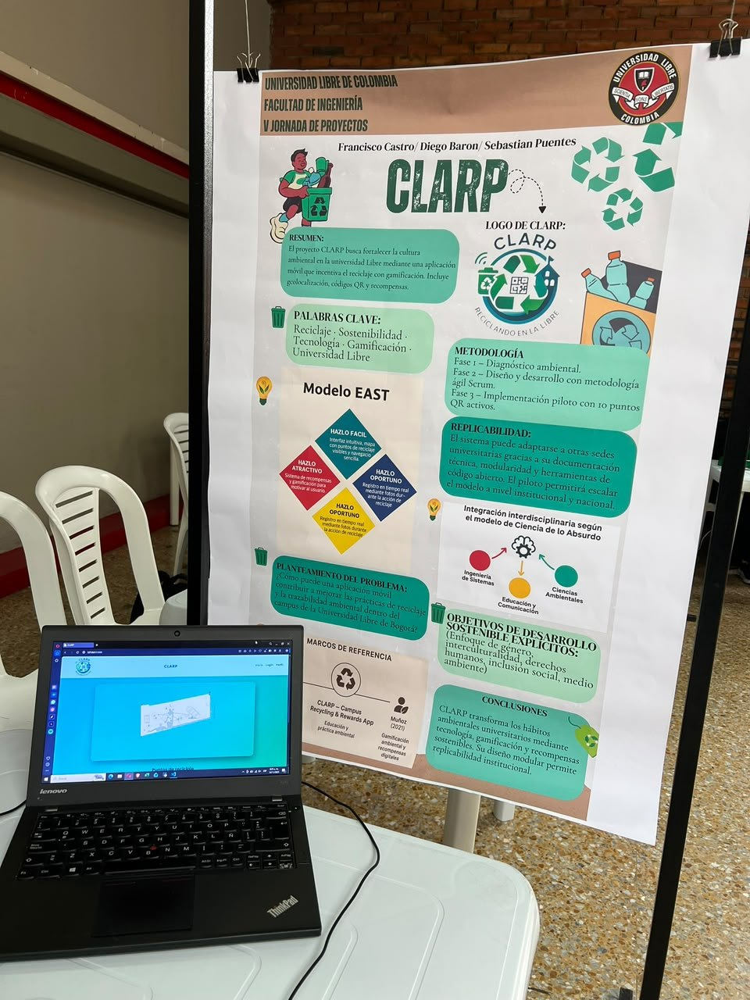
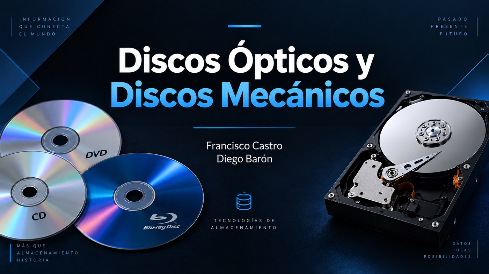

Programación
Lógica, desarrollo de software y estructuras de datos con Java y Python: herramientas que me enseñan a pensar soluciones y convertirlas en código.
Aquí reúno mi proceso como estudiante de Ingeniería de Sistemas y los proyectos con los que he convertido ideas, clases y trabajo en equipo en resultados reales.

Mi formación reúne programación, matemáticas, lógica computacional, electrónica y arquitectura de computadores. Cada área me ayuda a entender mejor la tecnología, desde las instrucciones que ejecuta un procesador hasta las soluciones que puedo construir con código.
Me gusta que los trabajos universitarios nos permitan experimentar, presentar nuestros resultados y aprender tanto de los aciertos como de los errores.
Ver la sección completa ↗Lógica, desarrollo de software y estructuras de datos con Java y Python: herramientas que me enseñan a pensar soluciones y convertirlas en código.
Más que números, son una forma de entrenar el análisis, modelar problemas y entender con mayor profundidad cómo abordar retos complejos.
Sensores, Arduino y microcontroladores me han permitido descubrir cómo el software puede dialogar con el mundo físico y convertirse en prototipo.
En esta área he aprendido a mirar más allá del código: qué instrucciones reconoce una CPU, cómo se procesan y por qué dos procesadores pueden realizar la misma tarea de maneras distintas. RISC y CISC son dos enfoques importantes para entenderlo.
RISC (Reduced Instruction Set Computer) parte de una idea: usar instrucciones relativamente simples y regulares, fáciles de decodificar, y combinarlas para resolver operaciones más grandes. No significa que el procesador tenga necesariamente pocas instrucciones.
En diseños como RISC-V, las operaciones aritméticas trabajan principalmente con registros y la memoria se consulta mediante instrucciones específicas de carga (load) y almacenamiento (store). La familia Arm también se asocia a diseños RISC.
CISC (Complex Instruction Set Computer) emplea un repertorio de instrucciones más diverso: algunas permiten combinar operaciones y accesos a memoria en una misma instrucción visible para el programador.
La familia x86/x86-64 es el ejemplo más conocido. En muchos procesadores x86 actuales, las instrucciones se decodifican internamente en operaciones más pequeñas, llamadas microoperaciones, antes de ejecutarse.
| Aspecto | RISC | CISC |
|---|---|---|
| Filosofía | Instrucciones sencillas y regulares | Instrucciones más variadas y especializadas |
| Formato habitual | Más uniforme; a menudo de longitud fija | Puede combinar instrucciones de longitud variable |
| Acceso a memoria | Frecuentemente separado en carga/almacenamiento | Puede integrarse con otras operaciones |
| Simplicidad de decodificación | Los formatos y operaciones regulares pueden facilitar la decodificación. | Algunas instrucciones requieren decodificación más elaborada. |
| Instrucciones por tarea | Una operación de alto nivel puede requerir varias instrucciones. | Una operación puede expresarse con menos instrucciones, según el caso. |
| Tamaño del programa | Depende del conjunto y sus extensiones; RISC-V puede incluir instrucciones comprimidas. | Puede favorecer código compacto gracias a instrucciones de longitud variable. |
| Implementación moderna | Puede incluir pipelines profundos, ejecución fuera de orden y otras optimizaciones. | Puede traducir instrucciones complejas a microoperaciones internas para ejecutarlas eficientemente. |
| Eficiencia energética | Puede facilitar diseños sencillos, aunque el consumo real depende del procesador completo. | También puede alcanzar gran eficiencia según el diseño, el proceso de fabricación y la carga de trabajo. |
| Ejemplos | ARM y RISC-V | x86 y x86-64 |
Lo que más me interesa de esta comparación es entender que no existe un ganador absoluto: en los procesadores modernos, el rendimiento y el consumo dependen también de la implementación, la memoria, el software y las optimizaciones.
Para entender la diferencia, primero distingo entre arquitectura del conjunto de instrucciones (ISA) y microarquitectura. La ISA define qué instrucciones puede utilizar un programa, sus registros y su comportamiento. La microarquitectura explica cómo un procesador físico ejecuta esas instrucciones: unidades internas, caché, predicción de saltos o ejecución en paralelo.
Las instrucciones disponibles, su codificación, los registros visibles y las reglas que sigue el software.
El diseño interno que busca, interpreta y ejecuta instrucciones mediante circuitos y optimizaciones.
La elección de la ISA influye en las herramientas y la compatibilidad; la velocidad final también depende del chip y el programa.
Imaginemos que queremos sumar uno a un número guardado en memoria. El ejemplo es ilustrativo y muestra instrucciones visibles para el programador; no compara directamente la velocidad ni el número real de pasos internos.
# a0 contiene la dirección del dato
lw t0, 0(a0) # cargar a registro
addi t0, t0, 1 # sumar 1
sw t0, 0(a0) # guardar en memoriaLas operaciones se organizan en cargar → modificar → guardar. Los cálculos se realizan en registros.
; RAX contiene la dirección del dato
add DWORD PTR [rax], 1
; lee, suma y escribe en memoriaUna instrucción puede combinar acceso a memoria y operación aritmética; por dentro, la CPU puede dividirla en varios pasos.
Nota: ambos fragmentos suponen datos enteros de 32 bits y direcciones válidas. No incluyen control de concurrencia ni garantizan el mismo comportamiento atómico frente a otros hilos.
Un modelo introductorio del procesamiento de instrucciones puede explicarse en cinco etapas. Los procesadores actuales pueden combinarlas, reorganizarlas o ejecutar varias instrucciones simultáneamente.
Las características tradicionales ayudan a estudiar sus diferencias, aunque no deben confundirse con reglas absolutas sobre todos los chips del mercado.
Algunas tareas requieren más instrucciones visibles; la densidad de código y las herramientas disponibles varían según la ISA y sus extensiones.
El repertorio puede exigir decodificadores más complejos; mantener compatibilidad histórica añade exigencias de diseño.
Muchos teléfonos y tabletas usan procesadores basados en arquitecturas Arm, de tradición RISC.
x86-64 está muy extendida en computadores personales; también existen equipos de escritorio basados en Arm.
RISC-V y Arm se utilizan en diversos controladores, dispositivos y proyectos de diseño de hardware.
Me quedo con una idea fundamental: RISC y CISC son enfoques para definir instrucciones, no garantías de rapidez o ahorro de energía. Al analizar un procesador también debo considerar su microarquitectura, memorias, compilador, consumo, compatibilidad y la aplicación que ejecutará.
No. La velocidad depende de muchos factores: diseño interno, frecuencia, memoria, compilador y tipo de carga de trabajo. La comparación entre familias no se resuelve solo con el número de instrucciones.
No necesariamente. Por ejemplo, RISC-V tiene instrucciones base de 32 bits, pero también dispone de una extensión comprimida con instrucciones de 16 bits.
Porque algunos procesadores x86 traducen instrucciones de su ISA a microoperaciones internas más simples. Lo que el programa ve no es necesariamente igual a la forma en que se ejecuta físicamente.
Documentación técnica oficial que he tomado como referencia para ampliar este tema:
En una exposición académica que preparé junto a Francisco Castro estudiamos la evolución de los medios de almacenamiento. Analizamos cómo funcionan los CD, DVD y Blu-ray, y cómo los discos duros HDD utilizan platos magnéticos y cabezales de lectura y escritura.
La presentación también compara sus ventajas, limitaciones y usos frente a otras tecnologías como las unidades SSD. Es un trabajo complementario al estudio de la arquitectura y los componentes de un computador.

Discos ópticos, funcionamiento de un lector láser, tipos de soportes, componentes de un HDD y diferencias entre HDD y SSD.
El PDF está incluido en este portafolio y puede abrirse aunque Canva requiera permisos de acceso.
En algunos celulares, la vista integrada del PDF puede no estar disponible.
Ver las diapositivas en PDF ↗Para ampliar el tema RISC y CISC: conceptos de RISC (Arm) y historia y diferencias (IBM).
Lo que aprendo en la universidad toma forma cuando lo llevo a proyectos concretos. En ese proceso he fortalecido la investigación, el trabajo en equipo, la comunicación de ideas y la capacidad de iterar hasta encontrar una mejor solución.
Ver proyectos integrados ↗Tres proyectos nacidos en mi formación universitaria, donde he combinado software, análisis e interacción con hardware para resolver problemas reales.

Campus Recycling & Rewards App. Una experiencia digital que busca premiar la cultura del reciclaje en la universidad.
Objetivo. Desarrollar un sistema de ubicación de puntos de reciclaje, verificación de entregas mediante códigos QR o fotografías y acumulación de puntos canjeables por beneficios institucionales.
Aprendizajes. Aprendí a traducir un problema ambiental cotidiano en una solución centrada en usuarios y a pensar en mecanismos de validación y recompensas.

Visión por computador aplicada al tejo. Uso procesamiento de imágenes para analizar una partida y comparar distancias al objetivo.
Objetivo. Detectar colores y establecer cuál elemento está más cerca del objetivo para apoyar el análisis del juego.
Aprendizajes. Exploré cómo transformar imágenes en datos medibles, aplicar detección de color y conectar lógica de análisis con una interfaz web.

Un bastón inteligente con sensores. Diseñé una propuesta de asistencia para detectar obstáculos cercanos con señales audibles.
Objetivo. Detectar obstáculos con un sensor ultrasónico HC-SR04 y generar alertas sonoras mediante Arduino.
Aprendizajes. Conecté programación con electrónica, adquisición de señales y pruebas de respuesta de un prototipo físico.